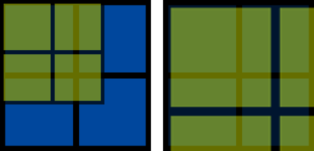
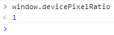

一、理清dpr的概念
devicePixelRatio，中文名称是设备像素比。这个概念在移动开发的时候会被特别关注，因为它关系到了整个画面的观感、布局甚至是清晰度。在JavaScript BOM中，它是window全局对象下的一个属性，它的定义如下：
dpr = 设备像素 / CSS像素
也有文章把设备像素称为物理像素，把CSS像素称为独立像素（DIPs），但所指的都是同样概念：
(1) 首先说设备像素。举手机的例子来说，设备像素也就是在手机广告上经常会看到的1920*1080像素或1280*720像素，也就是常说的分辨率为1080p或720p。它所指的是设备上有多少个能够显示一种特定颜色的最小区域，在任何设备中这个数值都是不会变的。
(2) 再说CSS像素，它的一种更广义的叫法是独立像素。CSS像素是为web开发者所打造的，是在CSS和JavaScript中使用的一个抽象的层，我们在CSS中定义的width: 100px;、font-size: 16px;等属性都是指CSS像素。而相对于CSS像素，设备像素这个概念在前端中几乎用不上（除了screen.width/height）。
那么，从定义来看，dpr的意义就是：在一个设备（的每个方向）上，每个CSS像素会被多少个实际的物理像素来显示。

上图中，一个蓝色方块代表一个设备像素，一个黄色方块代表一个CSS像素。我们可以通过这张图来理清dpr的概念：
- 如图左，一个设备像素覆盖了多个CSS像素，dpr < 1，对应用户的缩小操作；
- 如图右，一个CSS像素覆盖了多个设备像素，dpr > 1，对应用户的放大操作。
注意：由于用户的缩放操作会改变dpr，所以设备dpr是在默认缩放为100%的情况下定义的。
二、dpr的实际应用
1.移动设备
早期的手机屏幕都不是视网膜屏，PPI大多在90~160（pixels / inch）之间。为了兼顾可视区域的大小与画面的观感，手机厂商都默认把一个设备像素对应于一个CSS像素，大家dpr都是1，也就没人去关注dpr这个概念。
从iPhone4开始手机屏幕逐渐趋于视网膜屏，这时才有dpr一说。但各种移动设备的dpr不尽相同，其中iOS设备的dpr相对统一，但Android设备的dpr参差不齐：
| iOS设备 | PPI | dpr |
|---|---|---|
| iPhone4 | 326 | 2 |
| iPhone4s | 326 | 2 |
| iPhone5 | 326 | 2 |
| iPhone5s | 326 | 2 |
| iPhone6 | 326 | 2 |
| iPhone6s | 326 | 2 |
| iPhone6 Plus | 441 | 3 |
| iPhone6s Plus | 441 | 3 |
| iPad mini 4 | 326 | 2 |
| iPhone X（点此查看适配方案） | 462 | 3 |
| Android设备 | 设备像素 | dpr |
|---|---|---|
| 低清设备 | - | 1 |
| - | - | 1.5 |
| - | - | 1.75 |
| - | - | 2 |
| 魅族MX2 | 800*1280 | 2.5 |
| 小米note | 720*1280 | 2.75 |
| - | - | 3 |
| 三星note4 | - | 4 |
| … | … | … |
以iPhone5为例，其设备像素为640px*1136px，CSS像素为320px*568px，故dpr为2。
案例：假设有一张宽度为320px的图片：
(1) 若设置它的CSS像素为320px（通常是设置img标签的宽高），那么它在iPhone5中就会被硬件扩展为640px的设备像素，结果图片看起来就模糊了。（相当于被放大了）

(2) 若设置它的CSS像素为160px，再经过iPhone5硬件扩展为320px后，与原来的尺寸一致，就不会模糊了。
简记：只要图片的像素点个数与显示图片的设备像素点个数形成1:1的比例，图片就会清晰。
应用：如果先确定了img标签的尺寸，那么视觉稿的大小就要×2。（例如：img标签200×300，就要提供400×600的图片）
2.PC设备
相比于移动设备，PC设备上的dpr在前端开发中并不棘手。目前除了某些高分辨率的笔记本、显示器，其余大多数屏幕的dpr都集中在1，这也就是在PC上开发的移动页面必须考虑dpr问题的根源所在。
想了解当前屏幕的dpr值，只需在浏览器控制台输入window.devicePixelRatio即可：

三、需要注意的地方
(1) 当页面设置了<meta name="viewport" content="width=device-width,initial-scale=1">的时候，document.documentElement.clientWidth在大部分浏览器中表示的是布局视区的宽度，等同于CSS像素宽度。
(2) 对于screen.width的值：
- 在iOS视网膜设备上表示CSS像素宽度，所以其设备像素宽度 = screen.width * dpr；
- 在Android与Windows Phone设备上表示设备像素宽度，所以CSS像素宽度 = screen.width / dpr。
参考资料：